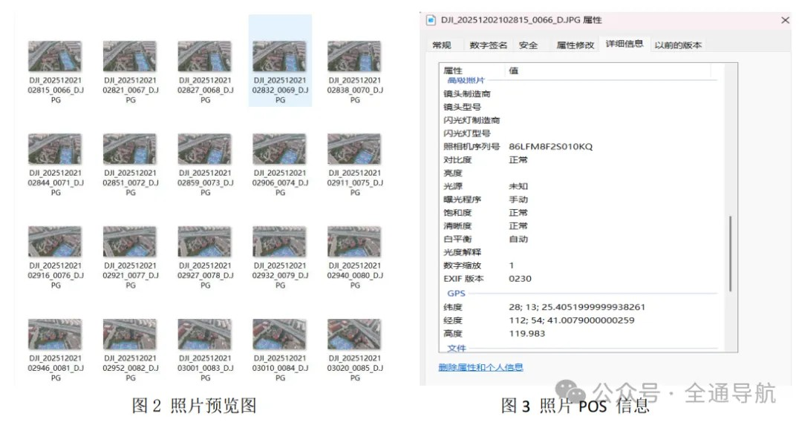
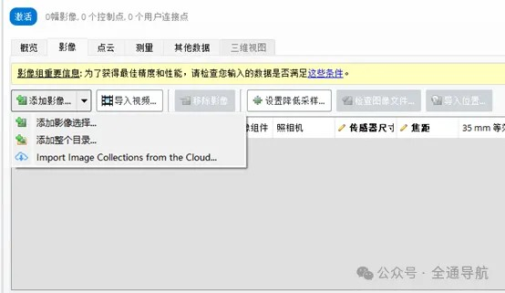
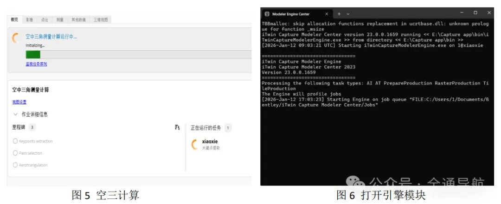
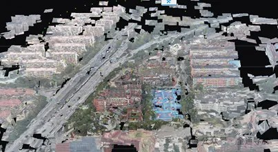
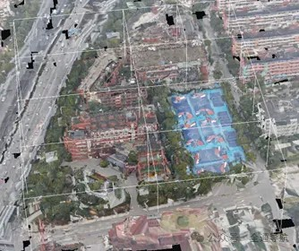
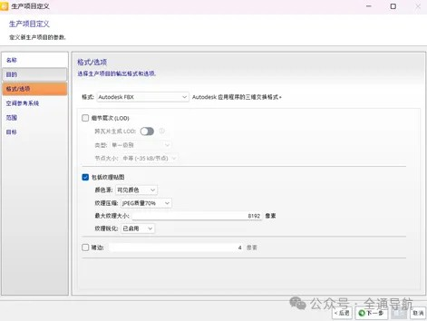
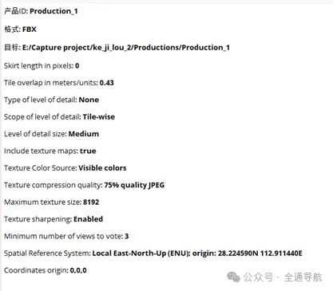
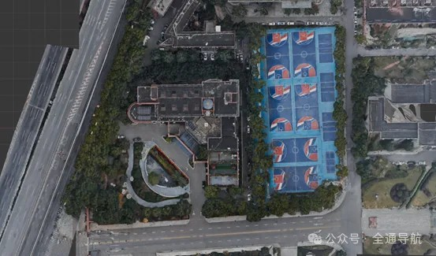
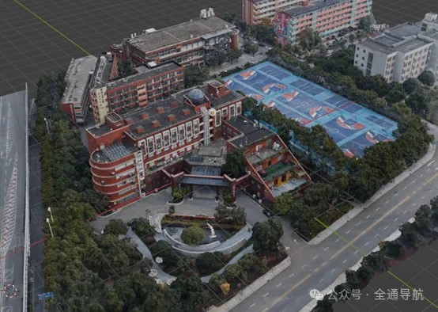

基于ContextCapture的无人机倾斜摄影三维建模操作流程 —— 湖工商科技楼为例
软件环境：Windows 11 + NVIDIA RTX 1060 + ContextCapture 2023.06（Master + Engine + Viewer）
一、实验环境配置
| 组件 | 版本/说明 |
|---|---|
| 无人机 | Air 3S 无人机 RTK |
| 三组航高 | 50/90/120 米 |
| 航向/旁向重叠度 | 80%/70% |
| Windows 11 23H2 | 消息生成 |
| GPU | NVIDIA GeForce RTX 1060 Laptop GPU |
| 驱动版本 | 581.57 |
| 运行内存 | 16G |
| 重建软件 | ContextCapture 2023.06 |
💡 建议配置
✅ 电脑运行内存至少16G以上，否则容易生产失败
✅ C/D硬盘空间需留30G以上；无人机硬盘留10G以上
✅ 无人机支持航线规划 & RTK功能 → 提高照片利用率 & 定位精度
二、无人机倾斜摄影
1. 航摄实施要点
-
按时调机、设备调试及试飞 — 试照调整航摄元素
-
定期检查飞机及航摄设备，保障数据采集稳定
2.飞行参数设计值（下表）
| 技术参数 | 相对航高 | 旁向重叠度 | 航向重叠度 | 照片数 |
|---|---|---|---|---|
| 设计值 | 120m | 70% | 80% | 69张 |
| 设计值 | 90m | 70% | 80% | 48张 |
| 设计值 | 50m | 70% | 80% | 52张 |
注意
建议1：手动飞行时建议重叠度＞70%；
建议2：可使用航线规划软件自动飞行，保证重叠度稳定。
三、ContextCapture软件重建算法
1.SIFT算法（Scale Invariant Feature Transform）
1）建立尺度空间
2）GOG空间极值检测
3）特征点精准定位
4）计算特征点的主方向
5）生成特征点描述符
2 ASIFT算法
1）仿射摄像机模型
2）模拟待匹配图像在不同视角下的姿态
3）经过仿射映射来模拟摄影机在位移过程中发生的投影变形
3.光束法空中三角测量
1）其基本公式为共线条件方程
2）建立从像方空间到摄影中心再到物方空间的相关方程。
3）通过少量点加密获取待定点的地面坐标
四、ContextCapture软件处理数据生成三维模型
1.照片数据准备:
1）将图片放在同一个文件夹里面，如下图所示。
1）影像上云及云影不影响地物特征判读
2）在曝光瞬间因飞机航速影响造成像点最大位移不超过0.5个像素
3）如图3所示，GPS数据记录齐全，解算精度满足后期真实景三维模型制图要求
4）能识别微小地物，且清晰可见；
5）影像色调统一、无色斑。

2.三维重建软件操作流程
1）打开主要模块（ContextCapture Center Master）。选择添加影像，选择添加整个目录，导入照片数据，如下图所示。

2）点击主要模块右上角的提交空中三角测量计算，显示生产中如图5所示，同时需要打开引擎模块（ContextCapture Center Engine）如下图所示。

3）空三结束后检查照片利用率。数据完整才能进行三维重建如图7所示。
4）点击三维视图可以看到生成的空三坐标和模型草图如图8所示。此时框选需要兴趣重建区域，提交重建任务。

5）根据自己电脑运行内存大小来设置生产瓦片大小和尺寸，实验中，将每块大小使用的运存控制在16GB以内（注意这一步，否则会生产失败！！！），分块后如图9所示。

6）选择输出的FBX格式以及纹理压缩质量，颜色源等参考设置如图10所示。FBX项目全部参数如图11所示。


注意：
1）空三结束后，可以看到照片利用率，利用率不高则需要补拍
2）软件生产时要打开ContextCapture Center Engine工作模块
3）设置瓦片尺寸要根据电脑运行内存选择设置，否则会生产失败
4）模型生成时间根据电脑性能决定
5）注意照片的POS信息，重建时选用同一空间参考坐标
3.软件三维重建流程
1）多视影像密集匹配生成高密度三维点云
2）在点云基础上构建三角网，会生成三维网（TIN）模型
3）三维白膜模型进行纹理映射
4）生成具有真实纹理三维模型
五、常见问题与优化建议
| 问题 | 解决办法 |
|---|---|
| 模型生成有色差 | 对拍摄图片匀色处理 |
| 模型生产失败 | 注意瓦片大小不超过电脑运存 |
| 模型纹理质量低 | 提高纹理质量参数 |
| 模型分块生产不能显示 | 消息生成 |
| 模型地理信息误差大 | 加入相控点对图片进行刺点 |
（或使用带有RTK功能的无人机） | |空三后照片利用率低 | 需要重新补拍 |
六、工程文件与成果组织建议
1.cc_Project/
-
Technology Builing mages/ # 无人机倾斜摄影照片
-
Technology Builing / # 中间结果
1）Productions
2）Project files
3）Technology Builing.ccm
4）Technology Builing.ccm.bak
5）Technology Builing.ccm.lock
- Productions_1/Data/#输出结果
1）Tile_1.fbx #分块输出。本实验有7块
2）Tile_1_0.jpg
3）Tile_2.fbx
4）Tile_2_0.jpg
5）Tile_3.fbx
6）Tile_3_0.jpg
7）Tile_4.fbx
8）Tile_4_0.jpg
9）Tile_5.fbx
10）Tile_5_0.jpg
11）Tile_6.fbx
12）Tile_6_0.jpg
13）Tile_7.fbx
14）Tile_7_0.jpg
5.查看.fbx文件可用软件
1）ContextCapture Viewer
2）Blender
七、三维模型效果展示
1.模型展示
1）将模型的FBX格式导入第三方软件blender进行拼接，展示效果如图12和13所示。

